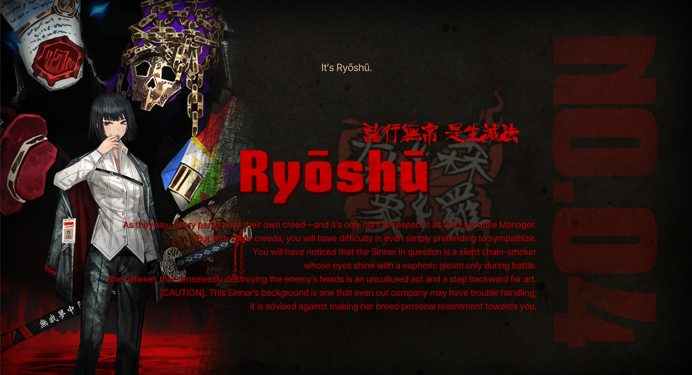

Inspired by "The Metamorphosis" by Franz Kafka. A chilled out kinda guy, one burderened by his past but tries to be chipper from time to time.
-
Inspired by "Crime and Punishment" by Fyodor Dostoevsky. A glutton and gambler, but always the one who tries to cheer up the group.
-
Inspired by "Demian" by Hermann Hesse. Anxious, but strong. He really grows on you, just as he grows in each canto.

Inspired by "The Wings" by Yi Sang. Ideal.

Inspired by "Moby Dick" by Herman Melville. Best canto song, and one of the best cantos. Kill the whale!
-
Inspired by "Wuthering Heights" by Emily Brontë. The best canto. True to it's title, it's heartbreaking.

Inspired by "Don Quixote" by Miguel de Cervantes. DON QUIXOTE!!!!!

Inspired by "Dream of the Red Chamber" by Cao Xueqin. An outstanding character, has easily shot up to be near the top of the list for cantos.
- 
Inspired by "Hell Screen" by Ryūnosuke Akutagawa. Y. T. N., Ryoshu.

Inspired by "The Stranger" by Albert Camus. I know Mersault has the best story but I can't prove it.
-
Inspired by "The Odyssey" by Homer. The Odyssy had a purpose.

Inspired by "Faust" by Johann Wolfgang von Goethe. Faust is Faust.